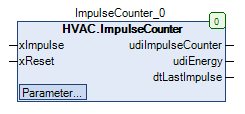

ImpulseCounter (FB)¶
FUNCTION_BLOCK ImpulseCounter
Kurzbeschreibung¶
Zähler für Eingangsimpulse mit Rücksetzeingang und einstellbarer Reduktion
Darstellung¶

Schnittstellen¶
Eingänge¶
Name Datentyp Wertebereich Initialwert Funktion xImpulse BOOL Zählereingang xReset BOOL FALSE Rücksetzeingang
Ausgänge¶
Name Datentyp Wertebereich Initialwert Funktion udiImpulseCounter UDINT Impulszähler udiEnergy UDINT Impulszähler nach Reduktion dtLastImpulse DATE_AND_TIME Datum/-zeitpunkt des Ende des letzten Zählimpulses
Sollwerte / Parameter¶
Name Datentyp Wertebereich Initialwert Funktion udiEnergyFactor UDINT 1 Reduktionsfaktor
Funktionsbeschreibung¶
Allgemeines¶
Dieser Funktionsbaustein dient zur Zählung der Impulse ( = ansteigende Flanken ) am Zähler-Eingang xImpulse im Rahmen der technischen Grenzen.
Der Zählerstand wird am Ausgang udiImpulseCounter angezeigt.
Überschreitet / erreicht der Zählerstand udiImpulseCounter den Grenzwert udiEnergyFactor, so wird der der Ausgang udiEnergy inkrementiert.
Anschließend wird der Ausgang udiImpulseCounter auf 0 zurück gesetzt.
Die Ausgänge udiImpulseCounter und udiEnergy werden auf 0 zurück gesetzt, solange am Eingang xReset eine ansteigende Flanke erkannt wird.
Am Ausgang dtLastImpulse steht nach jeder ansteigenden Flanke am Eingang xImpulse das aktuelle Datum / die aktuelle Uhrzeit zur Verfügung.
Am Ausgang dtLastImpulse steht bei allen anderen Zuständen am Eingang xImpulse das Datum / die Uhrzeit am Ende der letzten ansteigenden Flanke zur Verfügung.
Am Ausgang dtLastImpulse wird vor der ersten ansteigenden Flanke der Initialisierungswert DT#1970-1-1-0.0.0 ausgegeben.
Wertebereiche der Ausgänge udiImpulseCounter und udiEnergy
Gültige Zählerstände befinden sich innerhalb der Grenzen 0 und 4294967295.
Die Inkrementierung des Zählerstandes 4294967295 setzt den Zählerstand auf 0 zurück.
Anschliessend wird der Zählerstand wieder fortlaufend inkrementiert.
Reduktionsfaktor udiEnergyFactor
Der Reduktionsfaktor udiEnergyFactor wird nach jeder Eingabe des Wertes 0 mit dem Wert 1 überschrieben.
Beispiel - Reduktionsfaktor
udiImpulseCounter = 9, udiEnergy = 0, udiEnergyFactor = 10
Nach einer ansteigenden Flanke am Eingang xImpulse verändern sich die Zählerstände wie folgt:
udiImpulseCounter = 0, udiEnergy = 1, udiEnergyFactor = 10
Visualisierung¶
Information¶
Element Autoren Datum Version Anmerkungen Funktion Adam Bartod XX.XXX 1.0 Ursprungsversion Programmierung Adam Bartod 09.2016 1.0 Ursprungsversion Test Jochen Reu 10.2017 1.0 Ursprungsversion Dokumentation Lukas Pfänder 11.2017 0.1.3.0 Revision
Codesys¶
- InOut:
Scope Name Type Initial Comment Input xImpulse BOOL Zählereingang xReset BOOL FALSE Rücksetzeingang udiEnergyFactor UDINT Reduktionsfaktor Output udiImpulseCounter UDINT Impulszähler udiEnergy UDINT Impulszähler nach Reduktion dtLastImpulse DT Datum/-zeitpunkt des Ende des letzten Zählimpulses